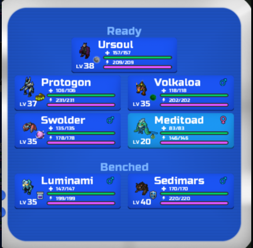

Details on the Protosoul core team!
ProtoSoul Core(Semi offense):
1)Protogon(Nimble, P cuffs) Can be both ranged wall breaker as well as revenge killer
2)Ursoul(V brawny, Ess) M Wall breaker
3)Luminami(V robust, Mys. Dust) Melee wall and pivot
4)Sedimars(V clever, Shield)Ranged wall and sharpen hasty damage dealer
5)Meditoad(Brawny clever v slug, health amulet)Utility with nice r defense and decent m def
6)Volkaloa(Brawny Nimble, Ess)Traps remover and late game cleaner/revenge killer
7)Swolder(robust clever, energy orb) Barbs remover with poison utility and multi tanky
Win rate: N/A (Based on 10 matches)
Overall: Solid team with a speed to finish off matches fast but best to avoid too many mind games and playing safe is more recommended.
